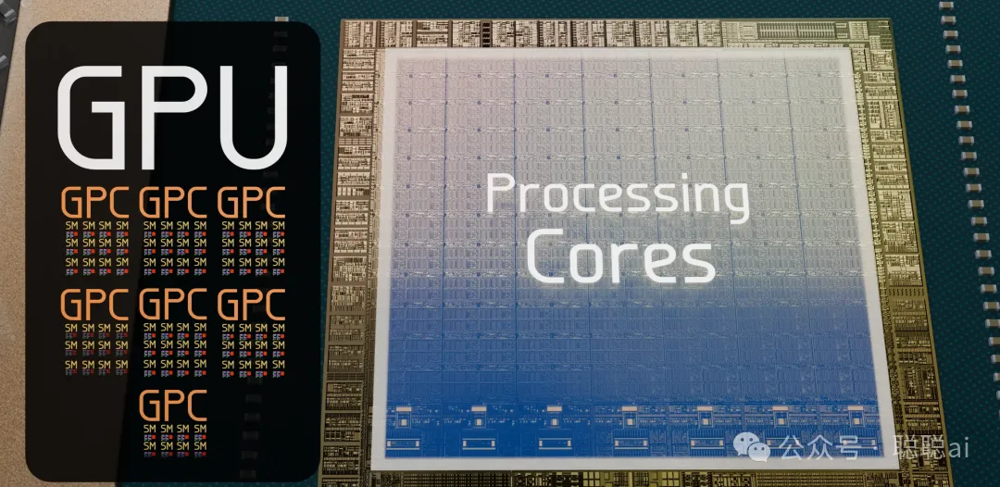

2012 年，AlexNet 在 ImageNet 竞赛中以压倒性优势夺冠，深度学习时代正式开启。不到两年后的 2014 年，NVIDIA 发布了 Maxwell 架构 GPU，将游戏画质推向了新高度。
但真正改变历史的，是 2006 年 CUDA 架构的诞生——那一年，NVIDIA 播下了一颗种子，让 GPU 从一块"游戏显卡"变成了"通用算力引擎"，最终催生了今天的大模型革命。
这篇文章，我想带你从最底层出发，系统理解 GPU 到底是怎么工作的，以及它为什么能成为 AI 时代最重要的基础设施。
📺 推荐配套视频：How do Graphics Cards Work? — Branch Education 出品
推荐Branch Education 的科普视频，这支 GPU 视频延续了其一贯风格：从晶体管级别出发，逐层拆解 GA102 芯片的物理架构、CUDA 编程模型、Tensor Core 和 RT Core 的分工。即使你已经看过大量 GPU 文章，这支视频依然能给你"原来如此"的顿悟感。本文正是以这支视频为骨架，结合 CUDA 编程实践、Tensor Core 五代演进、深度学习训练/推理的系统性知识扩充而成。

一、CPU 和 GPU：两个物种，不是两个版本
很多人一开始学 GPU，都会有一个困惑：CPU 和 GPU 到底有什么区别？是不是 GPU 更快？更强？
答案是：它们不是强弱之分，是设计哲学的根本分歧。
CPU 的设计目标：低延迟（Low Latency）
当你点开一个应用、切换一个窗口，CPU 需要在最短时间内给你响应。所以 CPU 把大量晶体管投入在：
- 分支预测（Branch Prediction）
：提前猜测代码往哪走，减少空转
- 乱序执行（Out-of-Order Execution）
：不等上一条指令完全执行完，就先执行后面独立的指令
- 大容量缓存
：用高速缓存吸收内存延迟，不用每次都去"图书馆"（内存）找数据
CPU 的逻辑是：让单个线程跑得尽可能快。
GPU 的设计目标：高吞吐（High Throughput）
游戏里每一帧画面，需要同时计算数百万个像素；大模型里，一个矩阵乘法有几十亿次运算——这些任务有一个共同特点：海量相同类型的计算，彼此独立。
GPU 的策略是：不追求单个线程快，而是让海量的线程同时跑。
这就解释了为什么 RTX 3090 有 10,752 个 CUDA Core，而一块高端服务器 CPU 最多也就 64 个核心——不是技术高低，是设计目标不同。
类比：CPU 像一架 Jumbo Jet，载客量少但飞得快；GPU 像一艘巨型货轮，装载量巨大但单体速度慢。问"哪个更快"没有意义，取决于你要运输什么。
图 1：GPU 与 CPU 的晶体管分配对比（来源：NVIDIA CUDA 编程指南）— 左为 CPU：大量晶体管用于缓存和控制电路；右为 GPU：大多数晶体管用于数据处理（算术逻辑单元）
延迟掩盖：GPU 的核心生存智慧
GPU 的计算单元速度极快，但访问显存（Global Memory）的延迟高达数百个时钟周期——这相当于每次计算都要等几分钟的图书馆调书。
GPU 的解法是：当一个 warp（32 个线程）在等数据时，SM 立刻切换到另一个 warp 来执行计算。GPU 的实际性能，取决于并行度是否足够高，能持续喂饱计算单元。
这就是所谓的 Latency Hiding（延迟掩盖）——GPU 不消除延迟，而是用高并行度把延迟"埋"起来。
二、CUDA 编程模型：为什么 GPU 需要自己的编程语言
问题的起源：GPU 最初根本不是用来"编程"的
2006 年之前，GPU 的唯一任务就是画图。渲染一张游戏画面，底层发生的事情是：CPU 把顶点坐标、纹理、光照参数等数据交给 GPU，GPU 内部有一条固定的硬件流水线逐级处理，最终输出像素颜色。
顶点数据 → 顶点着色器 → 图元装配 → 光栅化 → 片段着色器 → 帧缓冲这条流水线的每一级都是专用硬件——你不能改变它们的连接方式，不能让顶点着色器去做矩阵乘法。这就是为什么用 GPU 做通用计算（Scientific Computing、金融分析、AI 训练）几乎不可能：你需要用图形 API（OpenGL/DirectX）"伪装"你的计算任务，把数据塞进纹理、把计算伪装成着色器——极其繁琐，且性能损失严重。
CUDA 的诞生：一个大胆的问题
2007 年，NVIDIA 问了自己一个反直觉的问题：为什么 GPU 的计算单元只能做图形？为什么不能直接命令它们做任意数学运算？
这个问题的答案就是 CUDA（Compute Unified Device Architecture）。
CUDA 的核心创新不是发明了新硬件，而是发明了一套编程模型：让开发者用 C/C++ 的语法，直接控制 GPU 上成千上万个计算单元并行执行。
这和当年为什么会有 Java 一样——不是为了造新硬件，而是为了给现有的硬件提供更好的抽象。CUDA 对 GPU 的意义，相当于 Java 对 JVM 的意义：一次编写，到处运行（只不过这里是一次编写，万核并行）。
为什么要分三层：Grid → Block → Thread
这是 CUDA 设计里最精妙的地方。
你写了一段代码，要在 GPU 上跑矩阵加法：把两个矩阵对应位置加起来，结果写到第三个矩阵。
数学上，这个问题天然是并行的——每个位置的加法完全独立，互不依赖。那你作为程序员，你面临的问题是：我怎么把我这个"数学问题"翻译成 GPU 能理解的任务分配？
CUDA 给了你三个层次的抽象：
Thread（线程）： 最底层的执行单元。一个 Thread 负责计算结果矩阵 C 中的一个元素 C[i] = A[i] + B[i]。物理上，一个 Thread 就是 SM（流式多处理器）上调度和执行的一条指令流。
Block（线程块）： 一组 Thread（最多 1024 个）的物理分组。同一个 Block 里的所有 Thread，物理上运行在同一个 SM 上，因此它们可以通过 SM 上的 Shared Memory 互相通信、互相等待（同步）。不同 Block 之间无法直接通信——因为它们的物理位置（SM）事先未知，硬件无法保证它们在同一个地方。
Grid（网格）： 所有 Block 的集合，覆盖整个 GPU。一个 Grid 就是一个完整的计算任务。
为什么 Block 要限制在 1024 个 Thread？
- 一个 SM 上的寄存器数量是固定的（每个 SM 约 256 KB 的 Register File）
- 一个 SM 同时最多容纳 64 个 Warp（每个 Warp 32 Threads = 2048 Threads/SM 物理上限）
- 但每个 Thread 需要自己的寄存器，1024 Threads/block × N registers/thread，很快就会把寄存器用光
- 1024 是一个经验值：在大多数 workload 下，这个上限既能保证足够并行，又不会让寄存器溢出
图 3：CUDA Grid of Thread Blocks（来源：NVIDIA CUDA 编程指南）— Grid 由多个 Thread Block 组成，每个 Block 在一个 SM 上执行，Block 内的 threads 可通过 shared memory 通信
Warp：32 个线程为何绑在一起
Warp 是硬件真正调度指令的最小单位。
CUDA 编程模型里你写的是 Thread，但硬件 SM 实际上一次调度 32 个 Thread 同时执行同一条指令。这 32 个 Thread 就构成一个 Warp（字面意思：一束）。
为什么要 32？
- 这是一个硬件决定的数字，源于 GPU 内存总线宽度和并行度的平衡
- GPU 的全局内存访问以 128 字节（32×4 字节）为单位，恰好一个 Warp 的所有线程访问连续内存时，一次内存事务就能满足所有 32 个线程的数据需求
- 如果 Warp 大小不是 32，内存合并的效率就会降低
这就是为什么：同一个 Warp 内的所有线程，永远执行完全相同的指令（SIMT 的 S——Single Instruction）。如果它们执行路径分叉了（if/else），就会产生 Warp Divergence：GPU 不得不把分支的两个路径都跑一遍，让不需要的线程空转。
这也告诉我们：分支越少、线程行为越一致，GPU 利用率越高。
一个有趣的类比：Warp 就像划船比赛时的一排桨手。32 个人必须同时划——如果有人划、有人不划，整条船的速度反而会互相抵消。只有所有桨手节奏一致，效率才最高。
CUDA 内存模型：速度与距离的关系
CUDA 把内存分成了清晰的层次，每个线程能访问的存储位置决定了速度：
图 4：CUDA 内存层次（来源：NVIDIA CUDA 编程指南）— 寄存器→Local Memory→Shared Memory→L2 Cache→Global Memory→Host Memory，带宽递减、延迟递增
这张图值得反复琢磨：离计算单元越近，速度越快，但容量越小。这也是为什么 GPU 程序要尽量把数据"预取"到 Shared Memory，避免频繁访问显存——Global Memory 的带宽只有 L1 的千分之一，延迟是 L1 的 300 倍。
Occupancy（占用率）：GPU 性能的核心指标
Occupancy = 活跃 Warp 数 / SM 支持的最大 Warp 数。
如果 Occupancy 很低，意味着很多 Warp 在等内存，计算单元闲置。导致低 Occupancy 的常见原因：
- 寄存器溢出
：每个线程用太多寄存器，溢出到本地内存
- Shared Memory 分配过多
：一个 SM 只有 128 KB Shared Memory
- Block size 设置太小
：硬件无法调度足够的 Warp
NVIDIA 提供 Occupancy Calculator 工具，可以帮助开发者计算最优配置。
矩阵乘法：理解 Shared Memory 价值的最好例子
为什么 Shared Memory 这么重要？我们用一个矩阵乘法的例子来理解。
无 Shared Memory 的做法：每个线程计算 C 矩阵的一个元素，需要从显存里反复读取 A 矩阵的一整行和 B 矩阵的一整列——大量的重复读取，性能极差。
使用 Shared Memory 的做法：先把 A 矩阵的一块瓦片（Tile）从显存一次性加载到 Shared Memory，然后 Block 内的所有线程共享这块数据——"大家分着看一本书"，而不是每个人单独去图书馆借。
图 5-a：矩阵乘法（无 shared memory）
（来源：NVIDIA CUDA 编程指南）— 每个线程独立访问全局内存，大量冗余读取
图 5-b：矩阵乘法（使用 shared memory）
（来源：NVIDIA CUDA 编程指南）— 将 A 的行加载到 shared memory，显著减少全局内存访问次数
Flash Attention 之所以能极大加速 Transformer 的注意力计算，本质上就是一种极端的 Shared Memory 优化技术——把注意力矩阵的分块策略做到了极致。
三、GA102 物理架构：628 mm²，283 亿晶体管
RTX 3090 用的 GA102 芯片是一个工程奇迹。
核心规格：
|
参数
|
GA102（RTX 3090）
|
|---|---|
|
工艺
|
Samsung 8nm
|
|
晶体管数
|
283 亿 |
|
Die 面积
|
628 mm²
|
|
GPC 数量
|
7
|
|
CUDA Core 总数
|
10,752
|
|
Tensor Core 总数
|
336
|
|
Ray Tracing Core 总数
|
84
|
|
L2 Cache
|
6 MB
|
|
显存
|
24 GB GDDR6X，384-bit
|
|
显存带宽
|
936 GB/s
|
分层结构：
SM 内部结构：GPU 的基本作战单元
SM（Streaming Multiprocessor，流式多处理器）是 GPU 的基本执行单元。 理解 SM 为什么长这样，比记住它包含什么部件更重要。
SM 是怎么来的：为什么要"流式"处理
CPU 的执行模型是指令流：一条指令执行完，才执行下一条（加上流水线，超标量等优化，本质还是顺序推进）。
GPU 面对的工作负载（渲染像素、矩阵运算）和 CPU 完全不同：数百万个任务，彼此完全独立，结果互不影响。与其让一个复杂的处理器逐一处理，不如让 N 个简单的处理器同时处理 N 个任务。
这就是 SM 名称里"Stream"（流）的含义：数据流进处理器，每个处理单元只管自己的那一段，处理完直接输出——而不是等上一级完成。
用一个生活场景类比：
- CPU 像一条流水线工厂，每个工位做复杂装配，必须等上一个工位完成才能继续
- GPU 像酒店自助餐台，每个厨师同时做自己的菜，客人各取所需，不需要排队等一个人做完
SM 内部为什么这样设计
SM 内部的所有组件，都是为了解决同一个问题：如何让海量简单计算并行执行，同时尽可能减少数据搬运的代价。
为什么需要 Warp Scheduler？ 当一个 Warp 在等内存数据（300 周期延迟），Warp Scheduler 立刻切换到另一个 Warp 执行，用计算掩盖等待。SM 上有 4 个 Warp Scheduler，意味着同一个 SM 可以在 4 个 Warp 之间交替发射指令，保持计算单元始终有活干。
为什么 CUDA Core 是 32 个？ 一个 Warp = 32 个线程，SM 要在一个时钟周期内发射一条指令给这 32 个线程，所以需要 32 个执行单元来对应 32 个线程。这 32 个 CUDA Core 以 SIMD（单指令多数据） 的方式工作——同一条指令，同时作用在 32 个数据上。
Tensor Core 为什么只有 1 个？ Tensor Core 的矩阵乘法运算是密集计算，单个 Tensor Core 的计算密度已经很高（每周期 512 FLOPs），增加数量会大幅增加功耗和面积。一个 SM 有一个 Tensor Core 已经是面积/性能/功耗的平衡结果。
SFU 为什么只有 4 个？ 超越函数（sin、cos、log）在 GPU 代码里出现的频率远低于普通加减乘除，而且 SFU 每个周期只能处理一条指令——给太多是浪费，4 个是经验最优值。
每个 SM 每时钟周期可以调度 4 个 Warp（共 128 个线程） 同时发射指令。
为什么要 binning？ 一个 wafer 上的 die 质量不均匀，完美的 die → RTX 3090 Ti；轻微缺陷 → RTX 3090（屏蔽部分 SM）；缺陷更多 → RTX 3080。这是半导体商业化的核心策略，不是技术失败。
图 6：NVIDIA A2 Tensor Core GPU 产品照（来源：NVIDIA 官方 Ampere 架构页面）— Ampere 架构入门级数据中心 GPU，单槽被动散热；注意：GA102/RTX 3090 的内部 die shot 目前暂无官方图，此图仅作 Ampere 架构产品形态参考
四、三类核心：CUDA Core、Tensor Core、RT Core
GA102 里有三类不同的运算核心，分工明确、各有所长。这是理解现代 GPU 架构最重要的一节。
4.1 CUDA Core：GPU 的"基本步兵"
CUDA Core 本质上就是一个可以在一个时钟周期完成一次浮点乘加（FMA）操作的运算单元：
D = A × B + C乘法和加法在硬件里是融合的——同一个周期内完成，不需要中间舍入，精度更高，这就是 FMA（Fused Multiply Add）名称的由来。
GA102 的 CUDA Core 分类：
|
类型
|
数量/SM
|
总计（RTX 3090）
|
用途
|
|---|---|---|---|
|
FP32 Core
|
32
|
~2,624
|
32位浮点（游戏、图形）
|
|
INT32 Core
|
32
|
~2,624
|
32位整数（地址计算、逻辑）
|
|
FP64 Core
|
16
|
~1,344
|
64位浮点（科学计算）
|
有趣的是：FP32 和 INT32 共用执行单元（同一套硬件可配置为 FP32 或 INT32），而 FP64 是独立单元。这就是为什么 RTX 3090 的 FP32 性能恰好是 FP64 的两倍——不是因为硬件加倍，而是 FP64 单元数量只有 FP32 的一半。
算力计算：
每个 SM 还有 4 个 SFU（Special Function Units），专门处理除法、开方、三角函数等超越函数——但每个周期只能发射一条 SFU 指令，如果代码里大量调用 sin()/cos()，这里会成为瓶颈。
4.2 Tensor Core：AI 时代的加速器
这是 GPU 能统治 AI 训练战场的核心武器。
深度学习的主导运算是矩阵乘法。一个 Transformer 模型的 forward pass 中，约 80-90% 的时间花在 GEMM（通用矩阵乘法）上。
用 CUDA Core 做矩阵乘法，每个输出元素需要 N 次乘 + N 次加 = 2N FLOPs。如果有 10000 个 CUDA Core，4096×4096×4096 矩阵乘的理论算力约为 1.37 TFLOPS。
但 Tensor Core 直接把矩阵乘法做成了硬件指令：
Tensor Core 演进历程：
|
架构
|
年份
|
代表产品
|
关键创新
|
|---|---|---|---|
|
Volta
|
2017
|
V100
|
首次引入，4×4×4 矩阵乘法
|
|
Turing
|
2018
|
T4
|
第二代，支持 INT8/4/1 推理加速
|
|
Ampere
|
2020
|
A100
|
第三代，16×16×16，TF32/BF16/FP64
|
|
Hopper
|
2022
|
H100
|
第四代，FP8 原生，Transformer Engine
|
|
Blackwell
|
2024
|
GB200
|
第五代，FP4/FP6
|
Ampere A100 Tensor Core 的矩阵尺寸（每 Tensor Core 每周期）：
|
精度
|
矩阵尺寸
|
FLOPs/周期
|
|---|---|---|
|
FP64
|
8×4×8
|
128
|
|
TF32
|
8×8×16
|
256
|
|
BF16/FP16
|
16×16×16
|
512
|
|
INT8
|
32×16×32
|
1024
|
|
INT4
|
64×16×64
|
2048
|
精度越低，单位周期可处理的 FLOPs 越多——这就是量化（Quantization）能加速推理的硬件基础。
H100 的 FP8 和 Transformer Engine： Hopper 架构引入了 FP8 原生计算和专为 Transformer 结构优化的 Transformer Engine，可以动态选择最佳精度，在大模型训练场景下比 A100 提升最高 6 倍。
4.3 RT Core：光线追踪的专用硬件
跑个题，既然GPU里有RT core，那就说下咱们游戏玩家在意的光线追踪吧(¬◡¬)✧，传统游戏渲染用光栅化（Rasterization）——快但不真实：每个物体单独渲染，无法正确处理光线反射、折射和阴影。
真实世界的光线物理：光子从光源发出，经过若干次反射/折射，最终进入人眼。Ray Tracing（光线追踪） 正是模拟这个过程。
每个像素可能需要追踪数十条光线，每条光线经过多次 bounce，总计算量极其庞大——但每条光线之间完全独立，非常适合 GPU 并行。
RT Core 是专用的光线追踪硬件，专门加速两类核心运算：
1. Box Intersection（包围盒相交测试）
光线与场景物体求交的第一步：用 AABB（轴对齐包围盒）快速排除明显不相交的对象。软件做需要约 12 次比较，RT Core 硬件一次完成。
2. Triangle Intersection（三角形相交测试）
精确计算射线与三角形的交点——Möller–Trumbore 算法硬件实现。
由于全光线追踪计算量太大（Cyberpunk 2077 开启路径追踪需要 RTX 4090 才能跑 60fps），业界采用混合渲染：
- 光栅化
→ 处理不透明物体、几何细节
- 光线追踪
→ 只处理反射、阴影、环境光遮蔽（只对少量关键光线做 RT）
- DLSS（Deep Learning Super Sampling）
→ AI 重建提升分辨率，弥补光线追踪的性能损失
图 11：光线追踪原理（来源：NVIDIA 官方 Ampere 架构页面）— 摄像机发出光线击中物体后以不同角度反射，第二代 RT Core 支持异步计算，可在光追和图形/AI 计算同时进行；注：此图为光线追踪概念示意图，非 RT Core 内部晶体管结构图
五、SIMT 执行模型：GPU 是 SIMD 的"升级版"
要理解 SIMT，要从 SIMD 的局限说起——因为 SIMT 是 GPU 厂商在 SIMD 暴露了严重瓶颈之后，做出的设计升级。
SIMD 为什么会遇到瓶颈？
CPU 的向量指令（Intel SSE/AVX、AMD SIMD）本质是：用一条指令，同时对多个数据执行同一个操作。
这很优雅：一个时钟周期干了 8 个数的活。但问题在于：所有执行单元必须同时执行同一条指令。
现实代码不是所有数据都走同一条路：
在纯 SIMD 模式下（lockstep），硬件碰到分支时是这样处理的：
这就是 SIMD 处理分支的方式：所有分支都执行，然后用 mask 屏蔽不需要的 lane。
问题来了：
- 深度分支：3 层 if-else 嵌套 = 8 个分支全部执行一次
- 短分支：大量短分支（边界检查、特殊值处理）会导致大量 mask 切换开销
- 最致命的是：CPU SIMD 宽度有限（AVX-256 = 8 float），所以 8 个 lane 还好。但 GPU 的并行度是 thousands of threads，如果每个 Warp 的 32 个线程都走不同路径……
GPU 的并行规模让 SIMD 的问题彻底爆发
CPU 上，一个典型 SIMD 向量宽度是 256 位（8 float32），8 个 lane 之间的分支差异还在可接受范围内。
GPU 面对的是完全不同的量级：
-
一个 Warp = 32 个线程，物理上每个线程有自己的寄存器、
-
如果 GPU 也用 SIMD 的 lockstep 模式：32 个线程强制同步，一个线程等所有线程
-
那当这 32 个线程里有哪怕 1 个线程走不同路径（边界检查失败、特殊值处理），剩下 31 个全得陪着空转
这就是为什么 GPU 不能简单用 SIMD 的 lockstep 模式——GPU 的并行粒度是线程，不是 lane。
SIMT 的核心设计：线程 + 自动 Reconverge
SIMT 的关键思想是：
通过栈（Stack）和活跃掩码（Mask），硬件可以在物理PC锁步的前提下，模拟出线程各自推进的效果。；但硬件会自动把执行路径相同的线程打包成 Warp，以 SIMD 的效率执行。
这听起来矛盾——线程独立 vs. SIMD 效率——但解决方案很精妙：
每个线程在编程角度上有独立的 PC：
注：物理硬件层面，Warp 内的所有线程共享同一个物理 PC。上述逻辑 PC 的“跳转”实际是通过硬件切换 Active Mask（活跃掩码）串行执行不同路径的指令，而不是让物理 PC 分裂成 32 个。硬件层面，同一时刻发射的仍然是一条指令：
这就是 Reconverge（重汇聚）： 当分支的线程各自走完后，硬件保证它们在同一个地址重新同步，继续一起执行。Reconverge 点由编译器在生成指令时插入（BRA 指令指向汇聚地址），硬件负责检测和调度。
硬件层面的 Reconvergence Stack
硬件具体怎么知道"分支完成后去哪里汇聚"？答案是 Reconvergence Stack（重汇聚栈），一个由编译器生成指令、硬件维护的栈结构：
编译后生成的指令序列：
硬件怎么知道 0x20 是汇聚点？
编译器在每个分支的出口处插入 ReconvPoint 标记，硬件在执行分支指令时，把 Reconverge Point 的地址和活跃线程的"分裂状态"推入栈中。当某分支执行完毕，硬件 pop 栈，找到下一个 Reconverge Point，把该分支的线程重新归队。
SIMT vs. SIMD 对比
|
|
SIMD
|
SIMT
|
|---|---|---|
|
执行单元
|
向量寄存器（128/256/512-bit）
|
一组独立线程（32个）
|
|
分支处理
|
向量被打断，部分 lane 被屏蔽
|
线程级分支，自动 reconverge
|
|
每个 lane 有独立 PC？
|
否（lockstep 同步）
|
是（但硬件尽量同步）
|
|
代表
|
Intel SSE/AVX，AMD SIMD
|
所有现代 NVIDIA/AMD GPU
|
|
灵活性
|
低
|
高
|
|
线程规模
|
1 个线程内的向量操作
|
数千个并发线程
|
|
分支代价
|
按 lane mask 屏蔽，lane 越多浪费越多
|
按 Warp 分裂，32 个线程为单位
|
一句话总结： SIMD 是一个线程用加宽的管道一次处理 N 个数据；SIMT 是 N 个线程各自执行，但硬件把执行路径相同的打包成 Warp，以 SIMD 的效率运行。SIMT = SIMD 的效率 + 线程的灵活性。
六、显存：GDDR6X 和 HBM 的分叉路
GPU 的内存系统是决定性能的关键瓶颈之一。RTX 3090 用的是 GDDR6X，数据中心用的 A100/H100 则用 HBM——这两条技术路线，服务于完全不同的市场需求。
GDDR6X：PAM-4 信号技术
GDDR6X 使用 PAM-4（4电平脉冲幅度调制）——不像传统内存只用两个电压表示 0/1，GDDR6X 用四个电压级别在每个时钟周期传输 2 bit：
|
电压
|
逻辑值
|
|---|---|
|
高
|
11
|
|
中高
|
10
|
|
中低
|
01
|
|
低
|
00
|
这让 GDDR6X 在不提升频率的情况下实现双倍带宽：
- 频率：19.5 Gbps/pin（与 GDDR6 相同）
- 每引脚带宽：39 Gbps（GDDR6 的两倍，因为 GDDR6 用 NRZ 只传 1 bit/pin）
- 总带宽：384-bit × 19.5 Gbps / 8 ≈ 936 GB/s
HBM：AI 加速卡的标配
HBM（High Bandwidth Memory）和 GDDR 的核心区别：HBM 是 3D 堆叠，DRAM 芯片垂直堆叠，通过 TSV（Through-Silicon Via，穿硅孔）连接。
HBM3E 规格（NVIDIA H100/A100）：
- 1024-bit 物理接口（比 GDDR6X 宽 2.67 倍）
- 带宽：3.35 TB/s（H100 SXM5）
- 每个 AI 加速器最多 8 个 cube = 192 GB，带宽约 27 TB/s
这就是为什么训练 GPT-4 级别的模型需要 H100——不仅需要大内存容纳数百 GB 的模型权重，还需要超高带宽让 Tensor Core 持续"吃饱"数据。
带宽 vs 算力：AI 训练的真实瓶颈
AI 训练的实际 FLOPs 利用率（MFU）通常只有 30-50%，瓶颈不在算力，而在内存带宽。这也是 Flash Attention、Gradient Checkpointing、混合精度训练等优化技术存在的意义——用计算换内存。
七、GPU 与深度学习：为什么 GPU 天生适合 AI
深度学习和 GPU 的设计哲学高度契合，这不是巧合，而是历史必然。
深度学习的主导运算：矩阵乘法
全连接层：y = Wx + b → 矩阵乘法
卷积层：本质是多个小矩阵的滑动窗口乘法
注意力机制：Q、K、V 三个矩阵的乘法（Transformer 核心）
单个 Transformer Block 有 4-6 个大型矩阵乘法。BERT-Large 有 24 个 Block，GPT-3 有 96 个 Block——这就是为什么大模型训练需要如此海量的算力。
混合精度训练：现代大模型训练的标配
现代深度学习训练几乎全部使用混合精度：
|
精度
|
用途
|
|---|---|
|
FP32
|
主权重副本（模型权重存两份，防止误差累积）
|
|
FP16/BF16
|
前向传播、反向传播计算（Tensor Core 加速）
|
|
FP16
|
梯度存储和通信（减少通信带宽）
|
|
FP32
|
优化器状态（Adam m/v 需要高精度统计）
|
为什么不用 FP16 全程？ FP16 表示范围有限（65536 个均匀间隔的值），当梯度很小但权重大时，更新量会被吞掉（underflow）。解决方法是 Loss Scaling：将 loss 乘以一个系数让梯度落到 FP16 可表示范围。
BF16（Brain Float 16） 是 Google 为 TPU 设计的格式，和 FP32 有相同的 exponent 位宽（8-bit），表示范围和 FP32 一样大，精度稍低——这是目前大模型训练的新趋势（Llama 3、Mistral 等都用了 BF16）。
推理与训练：性能瓶颈的本质区别
训练：密集计算，前向+反向，大 batch，吞吐优先 → 算力瓶颈
推理：KV Cache 显存巨大，延迟敏感 → 内存带宽/容量瓶颈
vLLM（PagedAttention） 的核心创新是：将 KV Cache 分页管理（类操作系统虚拟内存），不同请求共享权重但各自有独立的 KV Cache，将 GPU 利用率从 ~30% 提升到 ~80%。
分布式训练：单卡之外的工程世界
单卡 A100 的算力已经很强，但 GPT-3 175B 需要数百张卡协同训练数月。
- Tensor Parallelism（张量并行）
：每个 GPU 只负责一个 layer 的一部分矩阵乘法（按列分片），需要 GPU 之间高带宽互联
- NVLink vs PCIe
：PCIe Gen4 = 64 GB/s；NVLink 4.0 = 900 GB/s，是 PCIe 的 14 倍
图 10：多 GPU 服务器内部结构（来源：NVIDIA 官方 Ampere 架构页面）— 展示多块 GPU 在同一主板上的物理布局，GPU 之间通过 NVLink 互联（NVSwitch 芯片负责全互联交换）
这就是为什么张量并行训练（如 Megatron-LM）需要 NVLink——否则 GPU 间通信会成为瓶颈。
图 13：Multi-Instance GPU（MIG）（来源：NVIDIA 官方 Ampere 架构页面）— A100/H100 支持 MIG，可将一个物理 GPU 切分为最多 7 个独立实例，每个实例拥有独立的 SM、内存和带宽，保证服务质量（QoS）
八、Roofline 模型：如何判断 GPU 程序的瓶颈在哪里
Roofline 模型是 GPU 性能分析的经典工具，直观展示算力和带宽哪个是真正的瓶颈：
Roofline 计算：
如何判断瓶颈：
- OI 高 → Compute Bound（计算绑定）：kernel 太重，增加算力直接提速
- OI 低 → Memory Bound（带宽绑定）：kernel 太轻，升级内存带宽或优化数据复用
典型 AI 模型的 OI：
- 训练（大批量）：OI ≈ 100–500 FLOPs/Byte → 通常 compute bound
- 推理（小批量）：OI ≈ 1–10 FLOPs/Byte → memory bound
这就是为什么训练用 HBM 带宽要求很高，而推理服务（如 vLLM）更关心显存容量（KV Cache 大小）和延迟。
图 12：Ampere 结构化稀疏性（Structured Sparsity）（来源：NVIDIA 官方 Ampere 架构页面）— Ampere 支持 2:4 结构化稀疏，权重矩阵中每 4 个元素有 2 个为 0，Tensor Core 可直接跳过零值计算，理论上实现 2 倍加速
九、GPU 技术演进时间线
|
年份
|
架构
|
代表产品
|
关键创新
|
|---|---|---|---|
|
2006
|
Tesla
|
—
|
CUDA 架构发布，GPU 通用计算时代开启
|
|
2012
|
Kepler
|
GTX 680
|
效率优化，GPU Boost
|
|
2014
|
Maxwell
|
GTX 980
|
SIMT 改进，效率大幅提升
|
|
2016
|
Pascal
|
P100
|
HBM2 首次引入，NVLink
|
|
2017
|
Volta
|
V100
|
Tensor Core 首次引入
，FP16 加速
|
|
2018
|
Turing
|
RTX 2080
|
RT Core 首次引入，INT8/4/1 推理加速
|
|
2020
|
Ampere
|
A100/RTX 30
|
第三代 Tensor Core，RTX 光追普及
|
|
2022
|
Hopper
|
H100
|
第四代 Tensor Core，FP8，Transformer Engine
|
|
2024
|
Blackwell
|
GB200
|
FP4/FP6，第五代 Tensor Core
|
写在最后
GPU 的发展史，是一部计算架构如何不断演进以匹配问题本质的历史。
从 2006 年 CUDA 的诞生，到 2012 年 AlexNet 证明深度学习可行，再到 2022 年 H100 把大模型训练推向新的量级——每一次突破，都不是凭空出现的，而是在正确的架构上积累的结果。
理解 GPU 架构，不是为了记住几个参数，而是为了理解：为什么深度学习非 GPU 不可？为什么 AI 算力需求增长得如此之快？为什么 HBM 带宽成了大模型训练的关键瓶颈？
当你理解了这三个"为什么"，你就会发现，GPU 的架构设计里，藏着现代 AI 工业背后最深层的逻辑。
本文基于 Branch Education 视频内容扩展，结合 CUDA 编程模型、Tensor Core 演进、深度学习训练/推理实践等系统性知识编写。
视频链接：https://youtu.be/h9Z4oGN89MU?si=Glbqd9x1scCpAzb5